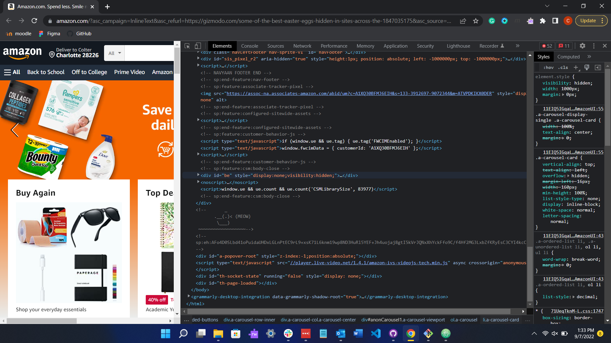

DIG 245 View Source Project
By Colter Nichols
- The first step in viewing a websites source code on the chrome browser is right clicking anywhere on the page
- The next step is to select inspect
- You should now be able to see the websites source code on the right!
- You can edit the css in order to see what diffrent settings look like in real time
- You can view other websites with design features and affects you like in order to replicate it yourself
- There is also a console so you can see potential bugs
Metaphore goes here: "manual overide" "webpage disection"
On amazon's website you can see a duck hidden in the code! All you have to do is go to amazon.com, click inspect, and then scroll all the way to the bottom
